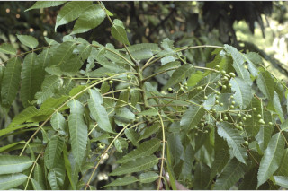
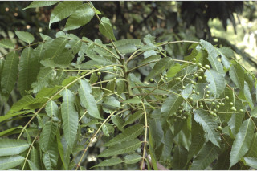
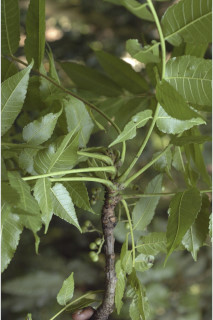
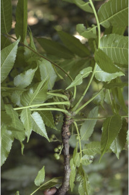
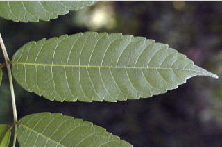
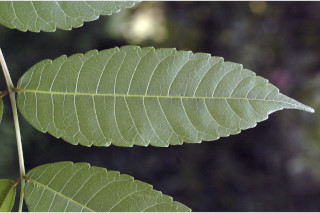

Trees up to 12 m tall.
12 ಮೀ. ಎತ್ತರದವರೆಗೆ ಬೆಳೆಯುವ ಮರಗಳು.
12 മീറ്റര് വരെ ഉയരത്തില് വളരുന്ന മരങ്ങള്.
மரம் 12 மீ. உயரம் வரை வளரக்கூடியது.
Bark flaky; blaze reddish.
ತೊಗಟೆ ಚಕ್ಕೆಯೆದ್ದ ಮಾದರಿಯಲ್ಲಿದ್ದು ಕಚ್ಚು ಮಾಡಿದ ಜಾಗ ಕೆಂಪು ಬಣ್ಣದಲ್ಲಿರುತ್ತದೆ.
ഇളകിപ്പോകുന്ന പുറംതൊലി; വെട്ട്പാട്ടിന് ചുവപ്പുനിറം.
மரத்தின் பட்டை செதில்களாக உரியக்கூடியது, உள்பட்டை பிங்க் நிறமானது.
Branchlets terete, glabrous.
ಕಿರುಕೊಂಬೆಗಳು ದುಂಡಾಗಿದ್ದು, ರೋಮರಹಿತವಾಗಿರುತ್ತವೆ.
ഉരുണ്ടതും, അരോമിലവുമായ ഉപശാഖകള്.
சிறிய நுனிக்கிளைகள் குறுக்குவெட்டுத் தோற்றத்தில் வளையமானது, உரோமங்களற்றது.
Leaves compound, imparipinnate, to 25 cm, alternate, spiral; rachis to 5 cm; leaflets up to 10 pairs with terminal one, opposite; petiolule of the lateral leaflets to 4 mm, terminal one to 2 cm; lamina 11-15 x 4.5-5 cm, oblong-lanceolate, chartaceous, glaucous, glabrous, apex acuminate, base oblique, cuneate, margin serrate; secondary_nerves ca. 15 pairs; tertiary_nerves reticulate.
ಎಲೆಗಳು ಅಸಮ ಸಂಖ್ಯಾ ಗರಿರೂಪಿ ಸಂಯುಕ್ತ ಮಾದರಿಯವುಗಳಾಗಿದ್ದು 25 ಸೆ.ಮೀ.ವರೆಗಿನ ಉದ್ದ ಹೊಂದಿರುತ್ತದೆ; ಪರ್ಯಾಯ ಹಾಗೂ ಸುತ್ತು ಜೋಡನಾ ವ್ಯವಸ್ಥೆಯಲ್ಲಿದ್ದು 5 ಸೆ.ಮೀ. ಉದ್ದದ ಅಕ್ಷದಿಂಡನ್ನು ಹೊಂದಿರುತ್ತದೆ; ಅಭಿಮುಖಿಗಳಾದ 10 ಜೋಡಿ ಕಿರು ಎಲೆಗಳು ಹಾಗೂ ಒಂದು ತುದಿಯಲ್ಲಿರುವ ಕಿರು ಎಲೆಗಳು ಇರುತ್ತವೆ; ಪಾರ್ಶ್ವದಲ್ಲಿರುವ ಕಿರು ಎಲೆಗಳು 4 ಮಿ.ಮೀ.ವರೆಗಿನ ಉದ್ದ ಹಾಗು ತುದಿಯಲ್ಲಿನ ಕಿರು ಎಲೆ 2 ಸೆ.ಮೀ.ವರೆಗಿನ ಉದ್ದ ಹೊಂದಿರುತ್ತದೆ; ಪತ್ರ 11 - 15 x 4.5 - 5 ಸೆ.ಮೀ. ಗ್ರಾತ್ರ, ಚತುರಸ್ರಾಕಾರ-ಭರ್ಜಿಯ ಆಕಾರ, ಕಾಗದವನ್ನೋಲುವ ಹಾಗೂ ರೋಮರಹಿತವಾದ ಮೇಲ್ಮೈ ಮತ್ತು ಮಾಸಲು ಬೂದು ಬಣ್ಣ ಹೊಂದಿರುತ್ತದೆ, ಪತ್ರದ ತುದಿ ಕ್ರಮೇಣ ಚೂಪಾಗುವ ಮಾದರಿಯಲ್ಲಿದ್ದು, ಬುಡಭಾಗ ಓರೆಯಾಗಿದ್ದು ಬೆಣೆಯಾಕಾರದಲ್ಲಿರುತ್ತದೆ, ಅಂಚು ಗರಗಸ ದಂತಿತ; ಎರಡನೇ ದರ್ಜೆಯ ನಾಳಗಳು ಸುಮಾರು 15 ಜೋಡಿಗಳಿದ್ದು, ಮೂರನೇ ದರ್ಜೆಯ ನಾಳಗಳು ಜಾಲಬಂಧ ನಾಳ ವಿನ್ಯಾಸದವು.
25 സെ.മീ വരെ നീളമുളളതും, ഏകാന്തരക്രമത്തില്, സര്പ്പിളാകൃതിയില് ക്രമീകരിച്ചിരിക്കുന്നതുമായ അസമപിച്ഛക ബഹുപത്രങ്ങള്; പത്രഅക്ഷത്തിന് 5 സെ.മീ വരെ നീളം; സമ്മുഖക്രമത്തിലുളള 10 വരെ ജോഡി പത്രകങ്ങള്, അറ്റത്തുളളത് ഒറ്റയാണ്; വശങ്ങളിലുളള പത്രകഅക്ഷത്തിന് 4 മി. മീറ്റര് വരെ നീളം, അറ്റത്തുളളതിന് 2 സെ.മീ വരെ നീളം; പത്രകഫലകത്തിന് 11 സെ.മീ മുതല് 15 സെ. മീ വരെ നീളവും 4.5 സെ.മീ മുതല് 5 സെ.മീ വരെ വീതിയും, ആയത-കുന്താകൃതിയും, ചര്മ്മില പ്രകൃതവും, നീലരാശികലര്ന്ന നിറവും, അരോമിലവും, പത്രാഗ്രം ചെറുവാലോട് കൂടിയതും, പത്രാധാരം ചരിഞ്ഞ, ആപ്പാകൃതിയിലും അരികുകള് ദന്തിതവുമാണ്; ദ്വിതീയ ഞരമ്പുകള് ഏതാണ്ട് 15 ജോഡികള്; ത്രിതീയ ഞരമ്പുകള് ജാലിതമാണ്.
கூட்டிலைகள், ஒற்றைபடை சிறகுவடிவக்கூட்டிலைகள் (இம்பேரிபின்னேட்), 25 செ.மீ. வரை நீளமானது, மாற்றுஅடுக்கமானவை; சுழல் போன்று அமைந்தவை; இலைக்காம்பு 5 செ.மீ. நீளமானது; சிற்றிலைகள் 10 ஜோடிகள் வரை இருக்கும், எதிராக அமைந்தவை, மற்றும் நுனியில் ஒரு சிற்றலை மட்டும் இருக்கும்; பக்கவாட்டிலுள்ள சிற்றிலைக்காம்பு 4 மி.மீ. நீளம் வரை இருக்கும், நுனி சிற்றிலைகாம்பு 2 செ.மீ. நீளம் வரை இருக்கும்; சிற்றிலையின் அலகு 11-15 X 4.5-5 செ.மீ., நீள்சதுரம் முதல் ஈட்டி வடிவானது, சார்ட்டேசியஸ், இலையின் கீழ்பரப்பு வெளிறிய நிறமானது, உரோமங்களற்றது, சிற்றிலையின் அலகின் நுனி அதிக்கூரியது, அலகின் தளம் சமமற்றது; ஆப்பு வடிவானது, சிற்றிலையின் விளிம்பு ரம்பபற்களுடையது; இரண்டாம் நிலை நரம்புகள் 15 ஜோடிகள் வரை இருக்கும்; மூன்றாம் நிலை நரம்புகள் வலைப்பின்னல் அமைப்பு கொண்டது.
Inflorescence axillary panicles, to 20 cm, peduncle up to 5 cm.
ಪುಷ್ಪಮಂಜರಿಗಳು 25 ಸೆ.ಮೀ.ವರೆಗಿನ ಉದ್ದ ಹೊಂದಿದ್ದು, ಅಕ್ಷಾಕಂಕುಳಿನಲ್ಲಿರುವ ಕವಲೊಡೆಯುವ ಮಧ್ಯಾಭಿಸರ ಮಾದರಿಯವು; ಪುಷ್ಪಮಂಜರಿಯ ವೃಂತ 5 ಸೆ.ಮೀ.ವರೆಗಿನ ಉದ್ದ ಹೊಂದಿರುತ್ತದೆ.
പൂങ്കുലകള് 20 സെ.മീ വരെ നീളമുളള കക്ഷീയ പാനിക്കിളുകളാണ്, പൂങ്കുലത്തണ്ടിന് 5 സെ.മീ വരെ നീളം.
மஞ்சரி இலைக்கோணங்களில் காணப்படும் பேனிக்கிள், 20 செ.மீ. வரை நீளமானது, மலர்காம்பு 5 செ.மீ. வரை நீளமானது.
Drupe, globose to lobed, up to 1.5 cm across; 1 seeded per pyrene.
ಕಾಯಿಗಳು ಗೋಳಾಕಾರದಿಂದ ಹಾಲೆಗಳುಳ್ಳ ಡ್ರೂಪ್ ಮಾದರಿಯವಾಗಿದ್ದು, 1.5 ಸೆ.ಮೀ.ವರೆಗಿನ ವ್ಯಾಸದಲ್ಲಿರುತ್ತವೆ; ಪ್ರತಿ ಪೈರೀನಿನಲ್ಲಿ ಒಂದು ಬೀಜವಿರುತ್ತದೆ.
1.5 സെ. മീ കുറുകേ വരുന്ന കായകള് ഗോളാകാരം മുതല് കര്ണ്ണിതം വരെ ആയ അമ്രകം ആണ്; ഓരോ പൈറീനിലും ഓരോ വിത്തുവീതം.
உள்ளோட்டுத்தசைகனி (ட்ரூப்), உருண்டையானது, குறுக்குவெட்டுத் தோற்றத்தில் 1.5 செ.மீ. நீளமானது; ஒவ்வொரு பைரினிலும் ஒரு விதை இருக்கும்.
 

 

 
